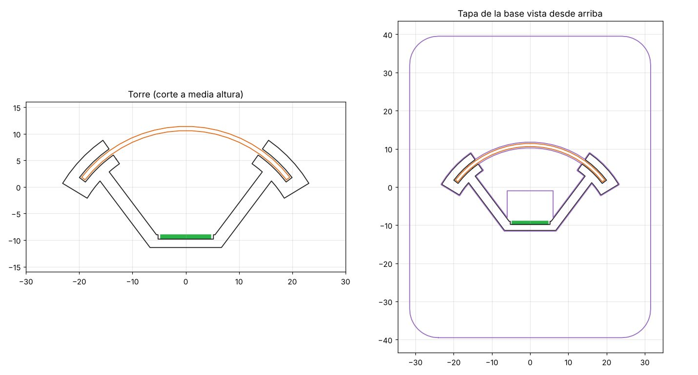
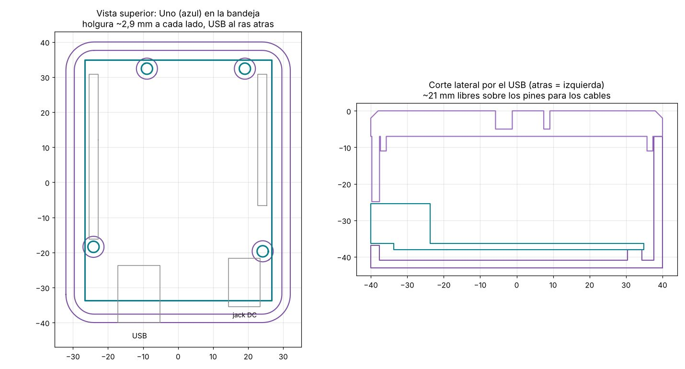
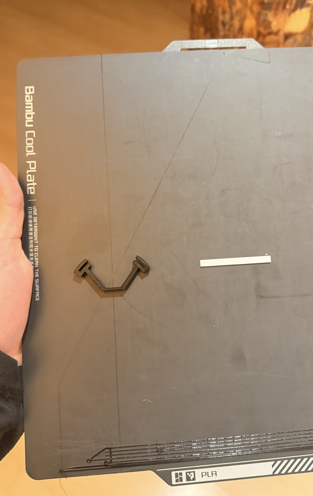
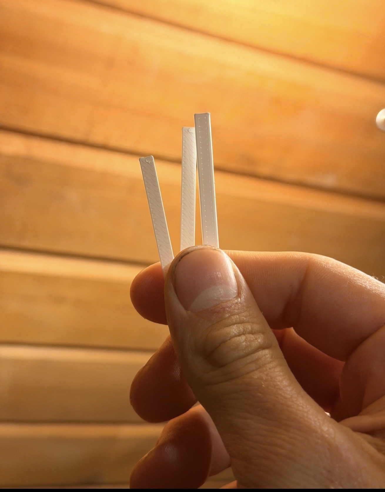
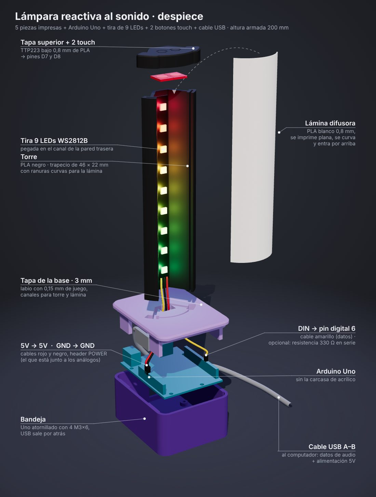
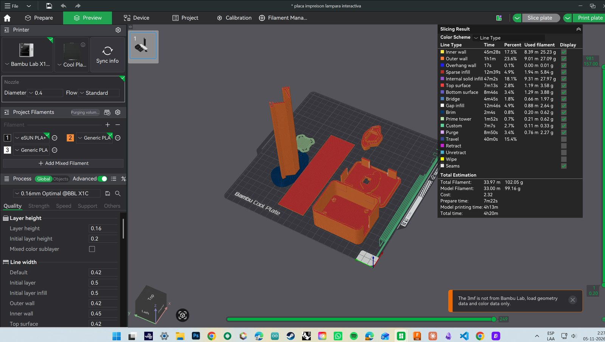
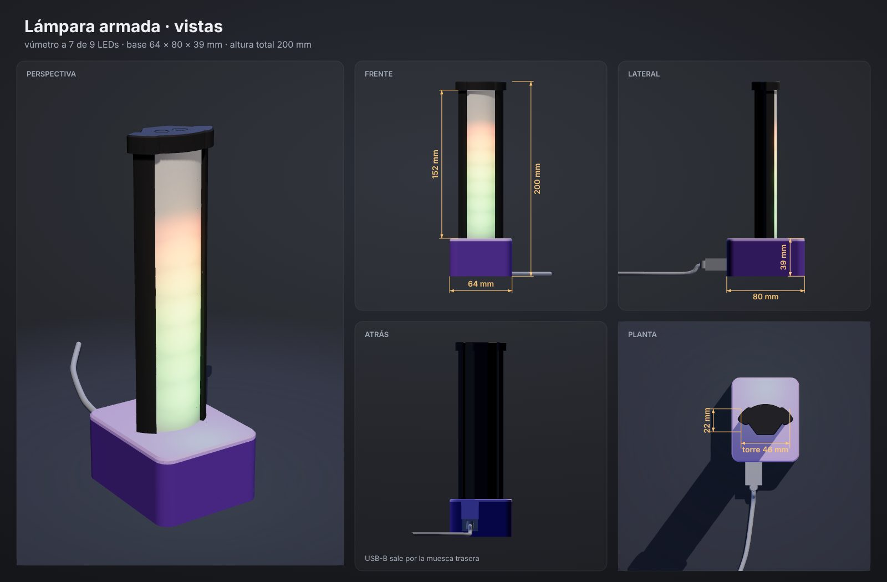
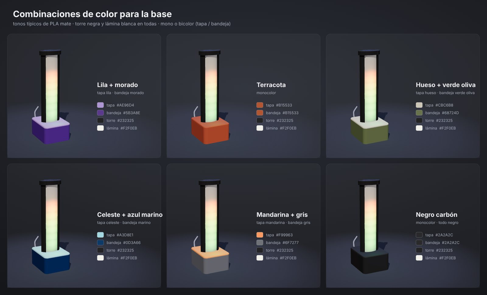

Taller de Interfaces · UAI · 2026
Lámpara reactiva al sonido
Una torre de 9 LEDs que escucha el audio del computador y lo convierte en luz. El computador analiza el sonido, el Arduino enciende los LEDs y una lámina impresa en 3D difumina la luz.

Cómo funciona
El computador escucha, el Arduino ilumina
La lámpara no tiene micrófono. El navegador escucha el micrófono o el audio que suena en el computador, lo analiza y le manda al Arduino el color de cada LED 30 veces por segundo.
De vuelta al computador
Dos botones touch escondidos bajo 0,8 mm de PLA en la tapa superior. El Arduino reconoce toque, doble toque, mantener y los dos juntos, y le avisa a la app, que decide qué hace cada gesto.
Avisos de Claude
Un script en Python conecta la lámpara con Claude Code: se pone ámbar cuando necesita una respuesta, azul mientras trabaja y verde cuando termina.
Proceso
De un boceto en la pizarra a una pieza impresa en una noche
El proyecto se diseñó, se probó y se imprimió en menos de 24 horas. Cada versión respondió a una prueba concreta.
Bocetos de la torre
El primer prototipo, modelado en Rhino, era una torre cilíndrica sobre una caja. A partir de él la planta pasó a un trapecio negro abierto adelante. La tira de LEDs va en la pared de atrás y una lámina blanca, impresa plana, se curva y engancha en ranuras en las esquinas. Todo se apoya en una base que esconde el Arduino.


Tira de 9 LEDs en vez de neón
Se evaluaron tiras neón de 12 V con MOSFET y fuente externa. Se descartaron por tiempo y complejidad: la tira WS2812B funciona con los 5 V del USB, cada LED se controla por separado y basta un solo pin.
Torre más chica
La primera torre medía 79 × 42 mm y se veía sobredimensionada. En la v2 la pared de atrás quedó del ancho de la tira (11 mm por dentro) y los brazos se acortaron. La torre pasó a 46 × 22 mm y la base a 64 × 80 mm, el mínimo para el Uno.


Un corte de 4 mm antes de imprimir todo
Se imprimió un corte de la torre y una tira de lámina para comprobar que la lámina se curva sin trizarse y que se engancha en las ranuras. Funcionó al primer intento.



Tapa delgada e imanes
La tapa de la base bajó de 7 a 3 mm y ganó un labio con 0,15 mm de juego. Se diseñaron ranuras para 8 imanes con pausa de impresión. Al final no se usaron: la impresión tenía que correr de noche sin nadie que hiciera la pausa. Las ranuras quedaron vacías y el labio sostiene la tapa.
Botones touch y Uno atornillado
Se agregó una tapa superior con dos módulos TTP223 bajo 0,8 mm de plástico, que además esconde el borde de la lámina. El Uno se atornilla con 4 tornillos M3 × 6, igual que en el controlador CONTROLA FLOW.



Una placa, 4 h 20 min
Las cinco piezas se imprimieron juntas en PLA negro y blanco, con capas de 0,16 mm, en la Bambu Lab X1C sobre Cool Plate. Ninguna pieza necesita soportes.
Decisiones de diseño
Por qué es así
Piezas y materiales
Lista de materiales
| Pieza | Material / modelo | Detalle |
|---|---|---|
| 1 · Torre | PLA negro | Trapecio de 46 × 22 × 157 mm con canal para la tira y ranuras curvas. |
| 2 · Lámina | PLA blanco, 0,2 – 0,8 mm | 44,3 × 156,8 mm, se imprime plana y se curva al montarla. |
| 3 · Bandeja | PLA | Aloja el Uno sobre 4 pilares con tornillos M3 × 6 y muesca para el USB. |
| 4 · Tapa de la base | PLA, 3 mm | Labio ajustado, canales para la torre y la lámina, agujero para cables. |
| 5 · Tapa superior | PLA negro | Bolsillo para 2 módulos touch bajo 0,8 mm de plástico. |
| Microcontrolador | Arduino Uno R3 | Firmware propio, 11 kB, comunicación serie a 115 200 baud. |
| Luz | Tira WS2812B, 9 LEDs | 145 × 9,4 mm, 60 LEDs/m, 5 V. |
| Botones | 2 × TTP223 | Sensores capacitivos de 11 × 14,3 mm. |
| Cable | USB A–B | Datos y alimentación desde el computador. |
Conexiones
Cableado
Tres cables para la tira y tres por cada botón. El Uno tiene un solo pin de 5 V en el header, así que los botones toman 5 V del conector ICSP o de un empalme en Y.
| Desde | Hacia | Nota |
|---|---|---|
| Tira 5V | Uno 5V | Header POWER |
| Tira GND | Uno GND | Cualquier GND |
| Tira DIN | Uno D6 | Opcional: 330 Ω en serie |
| Touch 1 I/O | Uno D7 | HIGH al tocar |
| Touch 2 I/O | Uno D8 | HIGH al tocar |
| Touch VCC | 5V del ICSP | Pin 2 del ICSP o empalme en Y |
| Touch GND | Uno GND | — |
Cómo se usa
Tres formas de usarla
Con música
Abre la app en Chrome o Edge, conecta la lámpara por USB y elige el micrófono o el audio del computador. Hay 6 efectos: vúmetro, espectro, pulso, fuego, ola y chispas.
Como lámpara
Sin computador, la lámpara alterna arcoíris, respiración, fuego y luz cálida. En la app hay además color fijo y un reloj de enfoque de 25 minutos que vacía la torre.
Con Claude Code
Un script cambia la luz según lo que hace Claude: ámbar si necesita tu respuesta, azul si trabaja, verde cuando termina. Un toque en cualquier botón apaga el aviso.
Botones touch (valores por defecto en la app)
| Gesto | Con la app | Sin computador |
|---|---|---|
| Touch 1 · toque | Siguiente efecto | Siguiente modo |
| Touch 1 · doble | Siguiente paleta | Modo anterior |
| Touch 1 · mantener | Brillo bajo / medio / alto | Brillo bajo / medio / alto |
| Touch 2 · toque | Prender / apagar | Prender / apagar |
| Touch 2 · doble | Cambiar sensibilidad | Color al azar |
| Touch 2 · mantener | Reloj de enfoque | Probar el aviso |
| Los dos juntos | Lámpara cálida | Volver a arcoíris |
En la app cada gesto se puede reasignar a otra acción. La configuración queda guardada en el navegador.
Avisos de Claude Code
- Instala pyserial:
pip install pyserial - Descarga claude_lampara.py y guárdalo, por ejemplo, en
C:/Users/PC/lampara/. - Agrega los hooks a
%USERPROFILE%\.claude\settings.json. - El puerto USB lo usa un programa a la vez: desconecta la app web para que funcionen los avisos.
{
"hooks": {
"UserPromptSubmit": [{ "hooks": [{ "type": "command",
"command": "python C:/Users/PC/lampara/claude_lampara.py trabajando" }] }],
"Notification": [{ "hooks": [{ "type": "command",
"command": "python C:/Users/PC/lampara/claude_lampara.py aviso" }] }],
"Stop": [{ "hooks": [{ "type": "command",
"command": "python C:/Users/PC/lampara/claude_lampara.py listo" }] }]
}
}
Variantes
Vistas y combinaciones de color
La base acepta uno o dos colores de PLA. La torre negra y la lámina blanca se mantienen para que la luz sea la protagonista.


Archivos
Todo para fabricarla
El modelo es paramétrico (CadQuery, Python): cambiando una medida se regeneran todas las piezas. El STEP abre en Fusion con las piezas separadas.